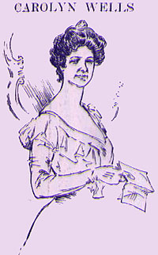

|  |
CAROLYN WELLS said: My poem is divided into three cantos. The first canto is as follows: RHYMES WRITTEN UPON THE OCCASION OF MARK TWAIN'S PASSING HIS SEVENTIETH SMILESTONE. The real origin of Mr. Clemen's pseudonym of "Mark Twain." Humor and Wit aimed their |
|
GREETING TO MARK TWAIN FROM HIS CONTEMPORARY HUMORISTS Your humor's searchlight, To-night our shafts of wit fly wide, |